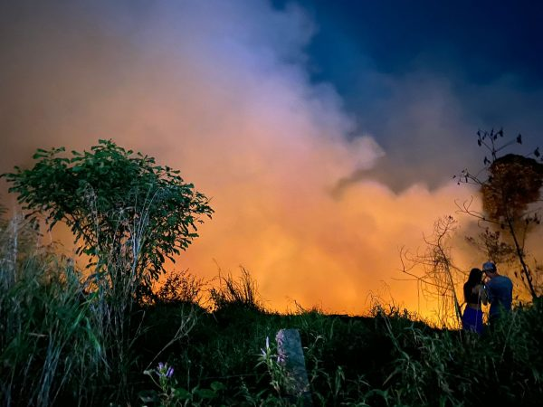

Incêndio de grandes proporções atinge área de mata na Zona Leste de Manaus; VÍDEO
Um incêndio de grandes proporções atingiu uma área de mata no ramal do Brasileirinho, bairro Jorge Teixeira, na Zona Leste de Manaus. O sinistro foi registrado na segunda-feira (16) e não houve vítimas. De acordo com o Corpo de Bombeiros Militar do Amazonas (CBMAM), a área é usada como "lixeira viciada" pelos moradores da região, e constantemente se utiliza fogo para queimar os resíduos que se acumulam no local. Segundo o Corpo de Bombeiros, duas guarnições foram até o local da ocorrência para o combate das chamas. ao todo foram usados 8 mil litros de água, além de 60 litros de Líquido Gerador de Espuma (LGE).
Acesse a matéria aqui